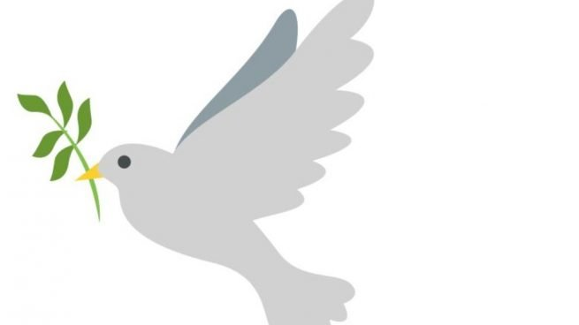

La paz es un don de Dios y, al mismo tiempo, una tarea de todos.
Una persona pacífica es una persona serena que no se deja afectar por las circunstancias desfavorables que pueda hallar en su camino y jamás reacciona con violencia.
No es fría ni insensible, tiene sentimientos fuertes y adecuados que la hacen sentirse como una persona independiente capaz de enfrentar las dificultades, sin dejar que la arrastren las circunstancias que no pueden controlarse.
Nunca pierde el dominio de sí misma ni se siente afligida por los problemas.
Sus principales recursos para tratar los conflictos con los demás son la reflexión, el diálogo y la búsqueda de acuerdos. La paz y la serenidad superan el temor y el nerviosismo; han sido los grandes objetivos de los sabios y las naciones.
- 